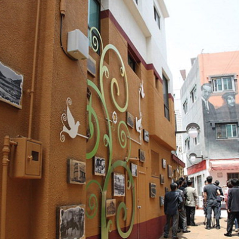
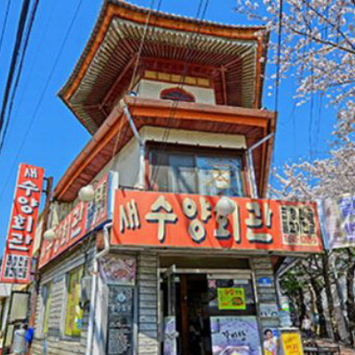
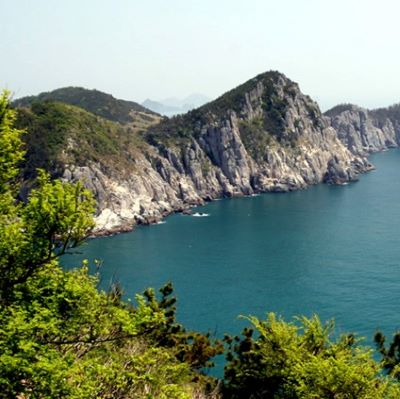

경상남도 8경

제1경
거제 해금강
수억 년 파도와 바람에 씻긴 형상이 갖가지 모습을 연출한다. 사자바위, 미륵바위, 촛대바위 등으로 둘러싸인 해금강은 서불이 불로 장생초를 구하러 왔다고 하여 ‘약초 섬’이라고도 부른다.

제2경
바람의 언덕과 신선대
원래의 지명은 ‘띠밭늘’로 불렸으나, 2002년부터 ‘바람의 언덕’으로 바뀌어 불리고 있다. 언덕에서 바다를 바라보면 한 없이 넓고, 고즈넉하며, 시원한 바람이 상쾌함을 선사한다.

제3경
외도보타미아
외도는 물이 풍부하고 기후가 온난하며, 강우량이 많아서 여러 가지 난대 및 열대성 식물이 자라고 있으며, 맑고 푸른 바다에 둘러싸여 거제해금강, 홍도, 대마도 등을 관망할 수 있다.

제4경
학동 흑진주 몽돌해변
흑진주 같은 검은 몽돌로 이루어진 해변이다. 남해안의 맑고 깨끗한 물이 파도쳐서 몽돌을 굴리며 아름다운 소리를 내고, 이는 우리나라 자연의 소리 100선에 선정되기도 하였다.
제5경
포로수용소 유적공원
거제도 포로수용소는 1983년 12월 20일 경상남도 문화재 자료 제99호로 지정, 보호되고 있다. 지금은 자료와 기록물들을 바탕으로 거제도포로수용소유적공원으로 다시 태어났다.

제6경
동백섬 지심도
하늘에서 내려다본 섬의 모양이 ‘마음 심(心)’자를 닮았다고 하여 붙여진 이름이다. 지심도 터미널에서 도선으로 15분 거리에 있고, 섬 전체가 거의 동백나무로 뒤덮여 있다.

제7경
여차-홍포 해안비경
여차 해변을 따라 명사해수욕장으로 향하다 보면 대병대도와 소병대도 등 크고 작은 섬들이 푸른 물결 위로 춤을 추듯 나타나고, 해안 절벽의 아름다움에 감탄을 금치 못한다.

제8경
공곶이/내도
공곶이의 산자락은 계단식으로 정리되어 있고, 종려나무, 천리향 등이 바다와 어우러져 한 폭의 수채화 같은 느낌을 준다. 내도는 외도의 안에 있다고 하여 ‘안섬, 모자섬’이라고도 부른다.

제9경
거가대교
국내 최대, 세계 최초, 세계 최고의 토목 기술의 집합체인 거가대교가 6년간의 공사기간을 거쳐 2010년 개통했다. 낮에는 확 트인 바다풍경을, 밤에는 아름다운 야경을 감상할 수 있다.
제1경
진주성 촉석루
촉석루는 진주의 상징이자 영남 제일의 누각
진주성 남쪽 석벽 위에 장엄하게 높이 솟은 웅장한 위풍은 진주성의 위상을 대변하고 있다.
남창대 또는 장원루라고 한다.
진주성 남쪽 석벽 위에 장엄하게 높이 솟은 웅장한 위풍은 진주성의 위상을 대변하고 있다.
남창대 또는 장원루라고 한다.

제2경
남강 의암
진주성 촉석루 암벽아래 남강 물속에 있는 바위로서 임진왜란 때 논개가 이 바위에서 왜장을 껴안고 투신한 후 의리를 세운 바위라 하여 의암(義巖)이라는 이름을 얻게 되었다.
제3경
뒤벼리
남가람 문화거리를 마주보며 남강 가에 우뚝 솟은 벼랑으로 굽이쳐 흐르는 남강과 어우러져 한 폭의 그림을 연출하는 곳
남강의 오묘한 풍치를 연상케하는 곳이다.
남강의 오묘한 풍치를 연상케하는 곳이다.
제4경
새벼리
시내로 들어오는 길목에 위치한 새벼리는 가좌동에서 주약동에 걸쳐있는 절벽을 말하는데 아래의 남강과 절벽을 따라 펼쳐진 도로가 주변 경관과 아름다운 조화를 이룬 곳

제5경
망진산 봉수대
이곳 봉수대는 예부터 외적의 침입을 알리는 통신 수단으로 이용된 것으로 크기는 옛날의 것보다 1/3로 축소 조성되었다. 날씨가 맑은 날은 지리산까지 볼 수 있다.

제6경
비봉산의 봄
비봉산은 시내지역을 조망할 수 있는 곳으로 산을 중심으로 비봉공원이 형성되어 있으며 산 동쪽에 의곡사(義谷寺)와 연화사가 있고, 서쪽 기슭에는 비봉루(飛鳳樓)가 있다.

제7경
월아산 해돋이
월아산은 도시자연공원으로 지정된 아름다운 산
아산토월(牙山吐月)이라 하여 동쪽 멀리 우뚝 솟은 월아산이 달을 머금고 금호지에 토해내는 장면은 천하일품이다.
아산토월(牙山吐月)이라 하여 동쪽 멀리 우뚝 솟은 월아산이 달을 머금고 금호지에 토해내는 장면은 천하일품이다.
제8경
진양호 노을
진양호는 덕천강과 경호강이 만나는 곳에 위치한 인공호수이다.
이곳의 노을은 진양호 주변경관과 어우러져 무한한 아름다움을 연출한다.
이곳의 노을은 진양호 주변경관과 어우러져 무한한 아름다움을 연출한다.
제1경
용지호수/주남호
물과 빛, 음악이 어우러지는 음악분수가 있다. 밤낮 어느 때든 호숫가를 걷기만 해도 힐링이 된다. 세계적인 조각 작품이 있는 조각공원도 있어 품격을 더한다.
제2경
콰이강의 다리
‘느림 우체통’에 엽서를 넣으면 한 달에서 1년 걸려 배달된다. 다리 옆 조형물에는 ‘사랑의 열쇠’도 채울 수 있게 했다. ‘스카이 워크’는 투명 강화유리를 깔아 발 아래 바다를 훤히 볼 수 있다..
제3경
시티투어버스
창원중앙역~용지호수공원~창원의 집~시티세븐~마산상상길~마산어시장~진해 제황산 공원~진해루~창원중앙역 등 8개 주요 관광지를 한바퀴 돈다.

제4경
가로수길/창동예술촌
창원 메타세쿼이아길에서 이색 카페투어를 할 수 있다. 아기자기한 매력의 벽화와 좁지만 정겨운 동예술촌 골목을 누비면 지친 마음이 재충전된다.
제5경
빛의 거리
매년 겨울 창원 상남동 분수광장과 마산 오동동 문화광장, 진해구 중원광장은 빛의 거리가 된다. 빛터널을 비롯한 다양한 장식물이 시내 야경과 어우러지면서 포토존으로 자리매김했다.
제6경
마금산온천
알칼리성, 평균 수온 55도 이상, 나트륨·철·칼슘 등 20여종 천연미네랄이 풍부해 피부질환과 류머티즘 신경통에 탁월하다. 전국에서는 9번째, 경남에선 최초로 보양온천으로 승인받았다.
제7경
창원의 집/문신미술관
순흥 안씨 안택영의 5대조 두철 선생이 거주하던 조선시대 전통한옥이다. 문신미술관은 창원이 낳은 세계적인 조각가 문신선생의 15년간 예술혼이 깃들어 있는 곳이다.

제8경
진해 군항마을
뾰족한 빨강지붕이 인상적인 수양회관, 러시아식 건축물 진해우체국 등이 있다. 봄이면 ‘진해군항제’가 열리며 벚꽃이 만개한 군항마을의 모습을 볼 수 있다.
제1경
남망산 조각공원
충무공원이라고도 불리며, 벚나무와 소나무가 우거진 높이 80m의 남망산을 중심으로 전개된 공원이다. 남동쪽으로 거북등대와 한산도,해갑도,죽도 등의 한려수도의 절경을 바라볼 수 있다.

제2경
달아공원 석양
국내 최고의 일몰을 자랑하는 곳. 통영시 남쪽의 미륵도 해안을 일주하는 23Km의 산양일주도로 중간에 있다. 달아'라는 이름은 이곳 지형이 코끼리 어금니와 닮았다고 해서 붙여졌다.

제3경
미륵산 한려수도
예로부터 미래의 부처인 미륵불이 내려오는 곳으로 믿어져온 곳. 통영에서 가장 높은 지대인 미륵산은 대한민국에서 가장 화려하고 아름다운 일출을 볼 수 있는 몇 안되는 명소 중 하나다.
제4경
사량도 옥녀봉
바다 위에 해무(바다안개)가 끼면 신기루처럼 환상적인 분위기를 연출하는 사량도는 하늘에서 내려다 보면 뱀이 기어가는 형상이라 해서 '뱀사'(蛇)자를 써서 사량도라 한다.
제5경
소매물도 등대섬
통영항에서 동남쪽 바다 위에 떠 있는 주민 50여명이 살고 있는 조그만 섬. 한려해상국립공원이 품고 있는 아름다운 보석 중 하나이다. 소매물도와 등대도를 합쳐 소매물도라 부르기도 한다.

제6경
연화도 용머리
바다에 핀 연꽃이란 뜻. 실제로 북쪽 바다에서 바라보는 섬의 모습은 꽃잎이 하나하나 겹겹이 봉오리진 연꽃을 떠올리게 한다. 매끄러운 구석이라곤 없지만 그만큼 풍성한 입체감을 자아낸다.
제7경
제승당 앞바다
한산대첩을 이룩한 충무공 이순신의 충절을 기리는 호국의 성지이다. 선조 26년부터 30년(1593년~1597년)까지 수군의 본영으로 해상권을 장악하고 국난을 극복한 중심지이기도 하다.

제8경
통영운하 야경
통영반도 남단과 미륵도 사이를 흐르는 통영 운하는 그 아래로 동양 최초의 해저터널을 품고 있다. 다리위의 오색 조명과 가로등이 바닷물에 반사되어 어우러진 훌륭한 야경은 가히 장관이다.